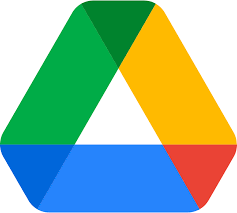

Cloud computing is an indispensable part of the modern world. People will need the support of it so much when they have to work on the Internet more.
The factor which contributes to the development of AI is data. AI has to handle a large amount of data, it can be up to millions of gigabytes, the question is how can human store these data in a computer. That is the reason for the release of cloud computing where people can store all the data on it. Cloud computing can be seen as a second brain of Internet devices, in addition, it is helping many giant tech companies to actualize their largest ambition. Cloud computing can be defined as the way of providing computing services such as servers, storage, databases, networking, software, and so on based on the Internet (Microsoft Azure). To understand easily, instead of installing these services on your local computer, it will be located on virtual servers on the Internet so that you can use them anytime and anywhere.
When World Wide Web (WWW) was invented in 1990 along with the first web browser in 1993, it has laid the foundation for the development of cloud computing after. Professor Ramnath Chellappa - Associate Dean and Academic Director of the Master of Science in Business Analytics program of Emory University has clarified the term “Cloud Computing” in 1997 as follows: “Computing paradigm where the boundaries of computing will be determined by economic rationale rather than technical limits alone.” (Cloud Tweaks). In 1999, Salesforce.com had become the pioneer in providing enterprise-grade apps on cloud server through the Internet, users can access these apps when they have the Internet, enterprises can buy savings services according to their necessity additionally.
Today, Google Drive, iCloud, Dropbox is part of cloud computing. Users can store their documents, photos, videos on that without worry about their computer capacity. Human is using cloud computing for many other purposes such as software development and testing, big data analytics (AWS). For instance, companies use cloud services instead of buying or maintaining hundred of computers and software, as a result, they can focus more on the objectives for the benefit of the company because the infrastructure and technology have been undertaken by others. Another example is the gaming industry, developers make use of the power from cloud computing to distribute online servers to all gamers around the world. Imagine that 100 million people are playing League of Legends at the same time on a normal server, without a doubt, they never can access the game because the server is not programmed to supply the resource for the number of people like that.
In the next three years, cloud computing will appear more in our daily life. It can be used for complex purposes such as user information management, business management, operating artificial intelligence. For example, Huawei will release Industry Cloud where thousand of separate clouds can operate concurrently on a digital ecosystem of different industrial segments. They expect that 85 % of enterprise applications will be set up on the cloud. As a consequence, operators will have an opportunity to deliver services for these enterprises to gain profit (Huawei).
At the moment, Huawei is still studying Industry Cloud, if they want it to become real, they need to ensure its quality. First, the most important thing is data security, the reason why I mention data security because Huawei is still having difficulties in protecting its user's information. Second, they should have better infrastructure to develop this cloud, as we know, the Trade War with the USA has had a great impact on Huawei, it will be a challenge for them to find a partner for research together. Finally, Huawei needs to reconsider the compatibility of Industry Cloud, enterprises will use it and they cannot avoid problems during the process of using or they cannot execute the tasks.


In the future, cloud computing will be implemented more in our daily life. First, it will make an impact on education, students do not need to bring many things to school such as notebooks, books, they can replace them with a laptop or an iPad, in addition, they can push their homework on the cloud so that they do not need to worry about the homework will be lost anymore (Built In, 2019). Second, people can work remotely from home, especially in a pandemic, a Wi – fi connection with a laptop can allow employees to finish their work without coming to the workplaces, all their tasks will be executed on a cloud. Finally, developing countries should apply cloud computing in the telecom industry because resources are always available on it so that they do not need to invest a large amount of money for building the infrastructure traditionally (IBM, 2013).
Many people expect that cloud computing will shape the future life of mankind, it will be the basis for issuing digital infrastructure in order to serve modern cities in the future. For instance, elevators, smart parking, flying as well as self – driving car will be operated by computers, all of them will be improved about the safety and manageability thanks to large storage capacity with speed analysis of cloud computing. With cloud computing, numerous jobs will be created, people will have more choices to find their suitable career. As a result, not only fabricating a revolution for our future and Internet but also generating many opportunities in finding new jobs, we can see how great is it of cloud can do for us. Cloud computing will be an indispensable part of the future of human society.
Cloud is really convenient in my daily life; I use a lot of services from the cloud because the advantage is undeniable. For instance, iCloud is a service that I use to back up the data on my phone, it helped me to transfer my documents, photos from iPhone to iPad easily. I do not need to plug it into the computer before, the only that I must have is an Internet connection. The most fascinating that I am going to talk about is Google Home – a speaker that can control my entire house. It has AI integrated so it will be more intelligent and can communicate through Google Assistant. With Google, I do not have to touch anything, I will use my voice to ask them to turn on the lights, air conditioner, or play some music. Furthermore, I can continue to watch my video on YouTube on the TV when I ask Google to do it for me.
For my mom, she loves the synchronization feature of iCloud because she can see every photo from her phone on the iPad. Besides, she can save many cooking recipes on it and never worry about it could be lost. At my university, my friends prefer to use Google Doc instead of Microsoft Word because it allows us to type, edit the document together, which means that many people can access it at the same time, we can give comments for the idea, as a consequence, my friend can modify it immediately. We also use Google Drive to save all the homework and studying materials because it can be protected better and we do not have to put everything in a bag and bring it to school every day. The benefits are it can reduce a lot of time, just open the app and find it to use, the other that we can use the materials anywhere, it is more convenient than finding a good place at a coffee or library to do the homework.
 Return to top
Return to top